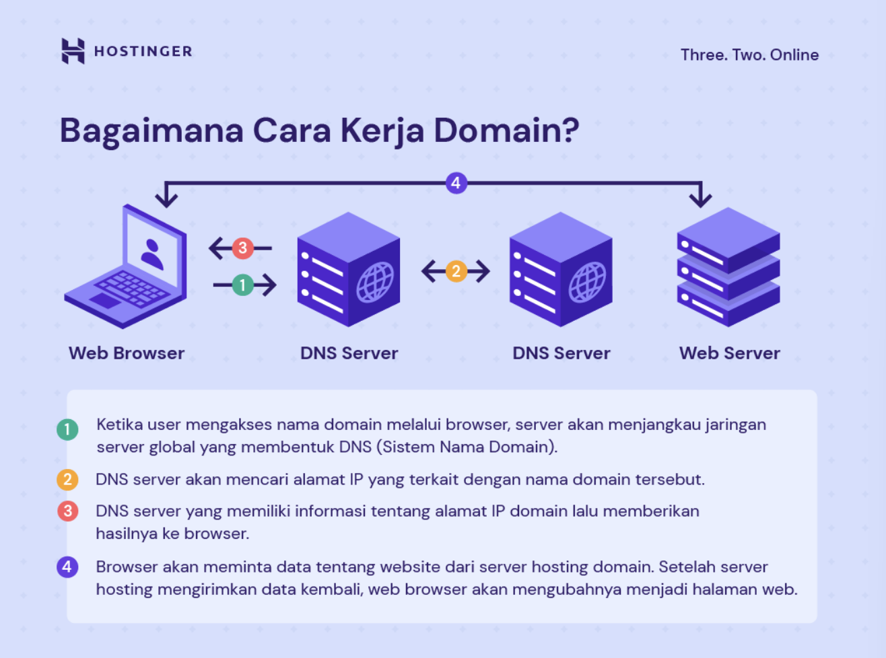

3. Definisi dan Cara Kerja Nama Domain
Setiap website di internet sebenarnya diwakili oleh serangkaian angka yang disebut Alamat IP (misalnya, 100.90.80.70). Karena sangat tidak praktis bagi manusia untuk menghafal alamat-alamat numerik yang selalu berbeda ini, diciptakanlah Nama Domain.
Definisi: Nama Domain adalah alamat unik yang mudah diingat (misalnya, hostinger.co.id) yang digunakan sebagai pengganti Alamat IP.
Cara Kerja Nama Domain:
- Input Nama: Pengunjung mengetikkan Nama Domain (hostinger.co.id) di browser.
- Penerjemahan IP: Domain ini akan diterjemahkan menjadi Alamat IP oleh DNS.
- Pengarahan ke Server: Alamat IP tersebut digunakan komputer untuk menuju server dan meminta data website.
- Fungsi Tambahan (Redirect): Domain dapat diatur untuk melakukan pengalihan (redirect) guna mengarahkan pengunjung dari URL yang salah ketik ke situs yang benar.

Cara Kerja Domain